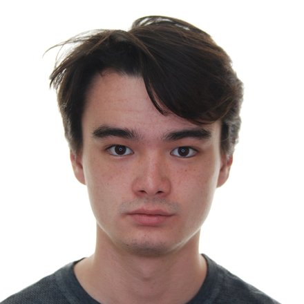

Murphy Shimamoto

Contact
Email: [add email]
Github
About
I write about movies, philosophy, and art. This site has my essays and a running list of what I’ve been watching.
Writing
-
You Can See Everything
On Nathan Fielder’s Elizabeth Holmes documentary and the limits of interpretation.
October 2026 -
What Ozu Leaves Out
On the empty rooms and missing scenes in Late Spring.
October 2026 -
The Long Take as an Argument
Tarkovsky, Akerman, and what it means to make a viewer wait.
September 2026 -
Kierkegaard at the Movies
Repetition, boredom, and why we rewatch.
August 2026 -
Standing in Front of a Rothko
What a painting asks of the person looking at it.
July 2026
Recently Watched
- Late Spring (Yasujirō Ozu, 1949)
- Stalker (Andrei Tarkovsky, 1979)
- Jeanne Dielman, 23 quai du Commerce, 1080 Bruxelles (Chantal Akerman, 1975)
- Close-Up (Abbas Kiarostami, 1990)
- Paris, Texas (Wim Wenders, 1984)